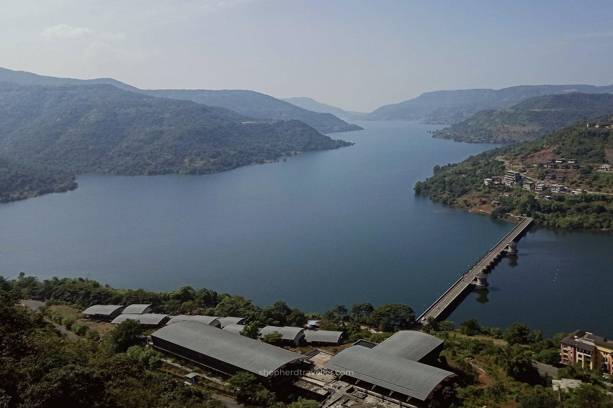
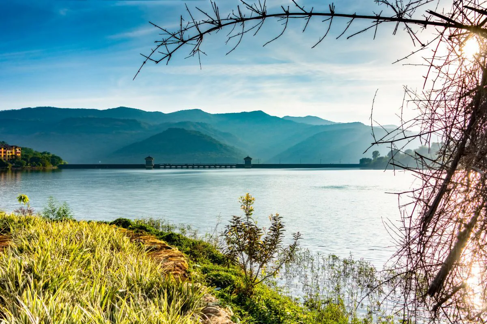

Lavasa Unheard
Unveiling the hidden stories, secret spots, and untold narratives from the heart of Lavasa. These are the stories that don't make it to the guidebooks.

The Jumping Bridge
Discover the secret cascades tucked away in the hills, known only to the locals and the most adventurous explorers.

The Bridge
The untold stories behind the unique architectural elements that make Lavasa a marvel of planned city development.

Lake View
Beyond the tourist trails lies a vibrant nocturnal ecosystem that awakens when the sun sets over the Western Ghats.